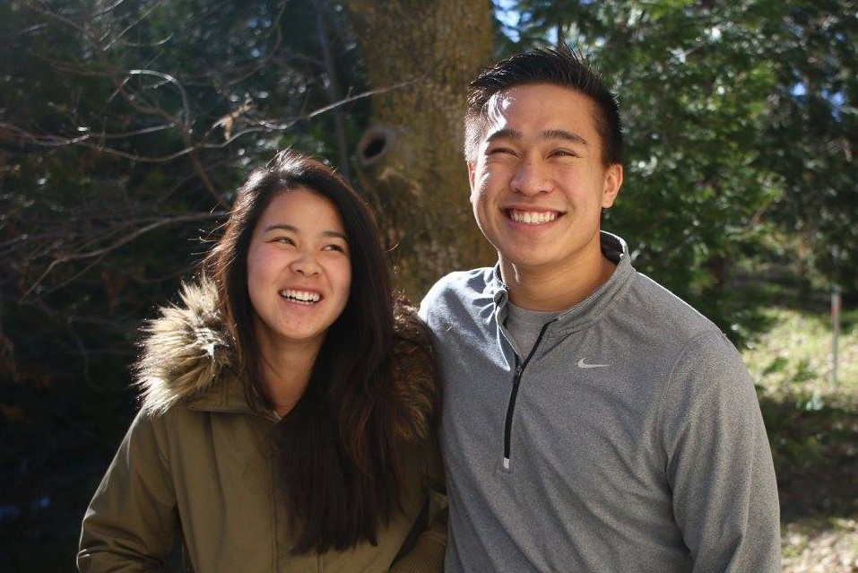
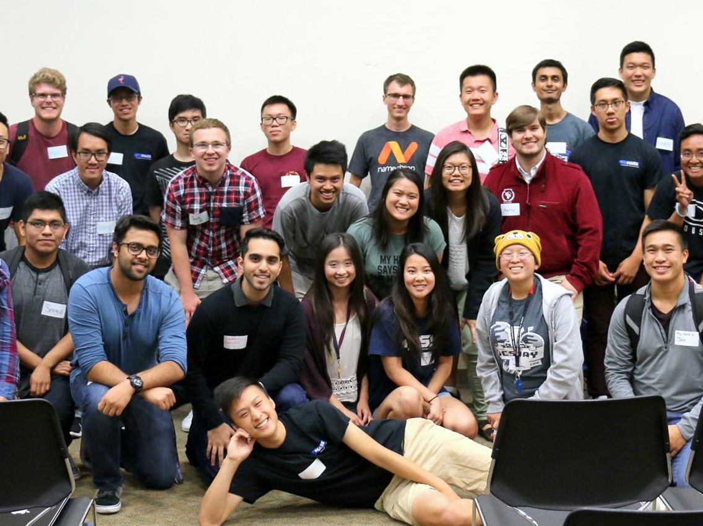

One of the biggest impacts in my life is the martial arts. When I was 11 years-
old, my mom opened her business in a small plaza in the city of Walnut. After
helping her transition into her new business, I stumbled upon a martial arts
school within the same plaza. Little did I know, I was continue this hobby until
this very day.
The martial arts has given me the opportunity to expand my boundaries. After
six and a half years, I earned my black belt, a rare feat that many do not
accomplish. In addition, I was challenged by the opportunity to compete in the
instructor division at tournaments, in which I grew watching the previous
generations of instructors demostrate their martial arts ability. Not to
mention, I took my first trip on an airplane to China on a company trip
for training with Shaolin Monks and Wudang Monks. In China, I went sight-seeing
and was on vacation.
Aside from learning how to defend myself and the opportunites presented to
me, the martial arts shaped my character into who I am today. In addition,
my martial arts instructor, Sensei Charlie, ended up being someone I could
always admired and communicate with whenever I had an issue. Today, I am glad to
have him as a friend and a brother. He always has my best interest in heart, and
I know no matter where I end up in life, I can continuously reach out to him. I
am grateful for the martial arts school and able to call it another home.
Management Information Student Society (MAISS)


Learn More!
The Management Information Student Society, or MAISS, at University of
California at Irvine is an organization for students, who have interests
in business and technology, to meet other students who share the same
interests. MAISS offers professional workshops, co-hosts business/technology
companies, and a mentorship program.
I first heard about the organization from my hallmate from freshman year, Ishan,
who is currently the President of the organization. He told me how I would be a
good fit for the mentorship program, and I should check it out. Up until that
moment, I, personally, have been focused on school and work. However, I enjoyed
my time at UCI, a school that had provided me with opportunities and tools to
learn about myself and grow. So, I decided to apply into the mentorship program
to give back to the UCI community.
When I got into the mentorship program, I met Yolanda, a first-year at the time.
We did more than just giving advice: we hung out, I cooked for her, and listened
to her whenever she needed advice. The mentorship relationship we had was amazing,
and we mutually expressed how we were grateful to have each other in each other's
lives. Due to my great experience last year, I continued the mentorship program
this year, and I got 3 more mentees: Irene, Vanessa, and Dayna. I hope to have
another wonderful experience with them and positively impact their lives.
Other
Learn More!
Personality
First off, I am extremely, extraverted person, so I love meeting new people and
talking with them; I am like a social butterly. However, I love getting to know
other people and learning about them. Occassionally, I people-watch because I
am fascinated by other people's interactions. Also, I like to think I am a well-
rounded individual, so I love the outdoors and doing physical activities.
Nonetheless, some of my time is spent watching tv shows, especially anime like
Shokugeki no Soma and Full Metal Alchemist. I'll be honest too; I don't think I am
a smart individual. Regardless, my hard work ethic definitely drives me and makes
up for what I lack in intelligence.
Cooking
Recently, I have picked up cooking, since I do my best to eat healthy and not
spend too much money eating out. One of my favorite things to cook is
Fettuccini Chicken Alfredo. I spent a lot of time making it good, so I even cook
my own Alfredo sauce (It's delicious, trust me). I hope to expand my cooking when
I finish school, just because I will have more time. I want to cook a variety of
cuisines from differently cultures, even lifestyle choices like vegan food, which
is an artform in of itself. Many vegan dishes are made bland, when some professionals
are able to give the dish strong unami (cooking term for taste.
Other
As I mentioned before, I been on an airplane one time in my life, which was to
China for martial arts. After going on that trip, I instantly got the travel bug.
I want to continue traveling at least once a year to a new place, whether its on
the other side of the country or in a whole new country. I like meeting people of
different cultures and just doing things I wouldn't normally be able to in
Southern California.